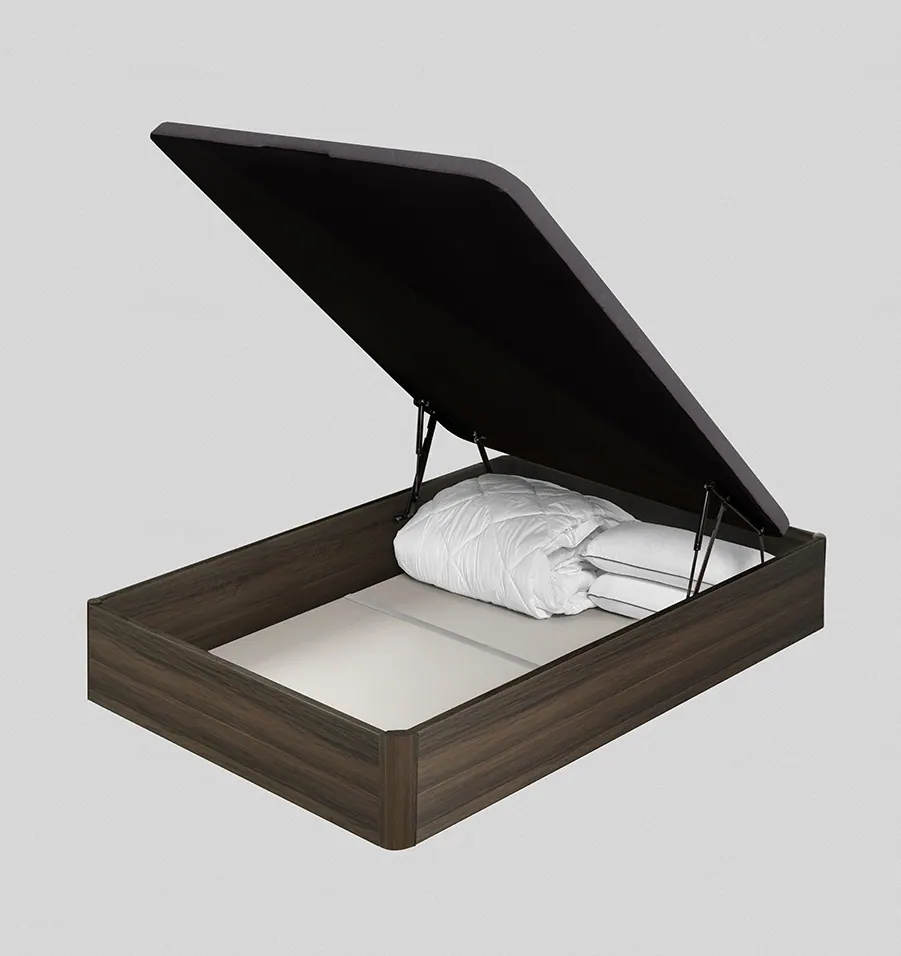
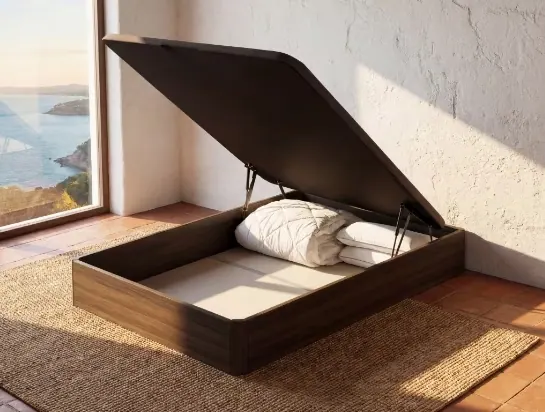
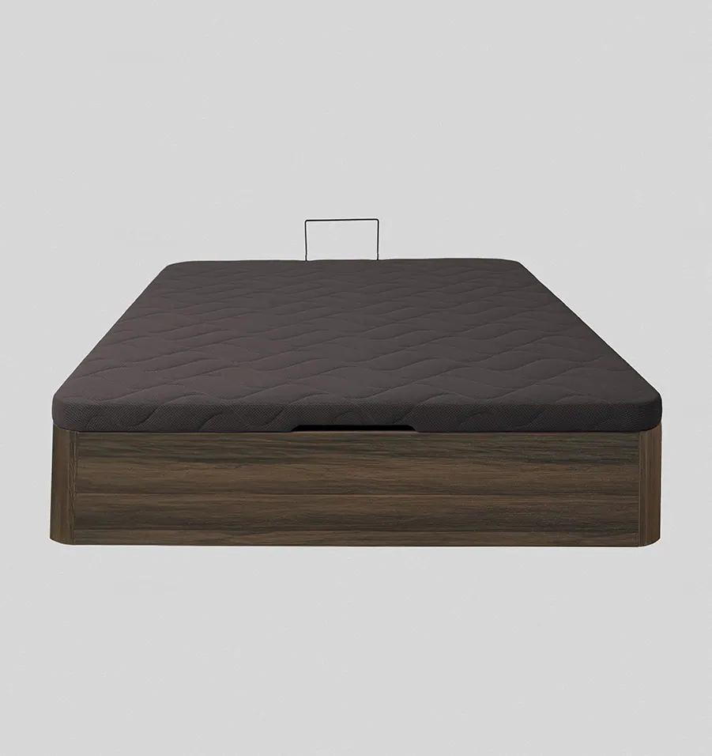
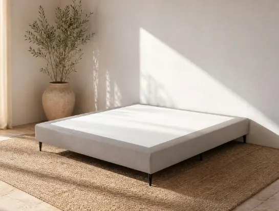
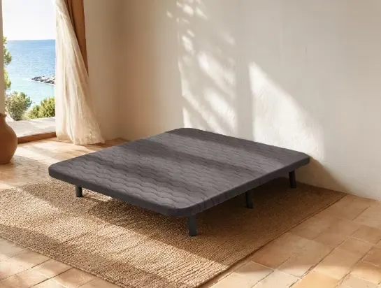

Canapé, somier o base tapizada: ¿qué es mejor?

La base sobre la que apoyas el colchón influye en cómo lo notas, en cuánto dura y en cuánto espacio ganas en el dormitorio. En esta guía comparamos las tres opciones más habituales, el canapé, el somier de láminas y la base tapizada, en lo que de verdad decide la compra: almacenaje, ventilación, precio y tipo de colchón.
Respuesta rápida
No hay una base mejor para todo el mundo. Depende de lo que necesites:
- Canapé abatible: si te falta espacio de almacenaje. Da un apoyo firme y guarda mantas, ropa y maletas bajo la cama.
- Base tapizada: si buscas un apoyo firme y uniforme, que el colchón ventile bien y un precio más contenido.
- Somier de láminas: si prefieres una sensación algo más flexible y tu colchón es de muelles. Con viscoelástica o látex, solo si las láminas están muy juntas.
Los tres funcionan con colchones de muelles ensacados. Para viscoelástica y látex, lo más seguro es una superficie rígida: canapé o base tapizada.
¿Qué diferencia hay entre canapé, somier y base tapizada?
El canapé es una caja con tapa abatible que sirve a la vez de base y de almacenaje. La base tapizada es una superficie rígida y tapizada sobre patas. El somier es un bastidor con láminas de madera flexibles, también sobre patas. Los dos primeros dan un apoyo firme; el somier, uno más flexible.
- Canapé abatibleUna estructura cerrada, normalmente de madera, con una tapa rígida que se levanta para acceder al hueco interior. El colchón descansa sobre una superficie plana y continua, y debajo tienes todo el volumen de la cama para guardar cosas.
- Base tapizadaUn tablero rígido forrado de tejido y apoyado sobre patas. Da el mismo apoyo plano que el canapé, pesa menos y deja libre el espacio de debajo de la cama, lo que facilita limpiar y que circule el aire.
- Somier de láminasUn marco, normalmente metálico, con láminas de madera curvadas que ceden un poco con el peso. El colchón se nota algo más blando que sobre una base rígida y ventila muy bien, pero el apoyo depende de cuántas láminas tenga y de lo juntas que estén.
Consejo del Asesor del Descanso. El mismo colchón se nota más firme sobre un canapé o una base tapizada que sobre un somier de láminas. Si dudas con la firmeza, tenlo en cuenta: en nuestra guía sobre la firmeza del colchón te explicamos cómo elegirla según tu peso y tu postura.
¿Cuál tiene más almacenaje?
El canapé, con diferencia. Es el único de los tres que convierte todo el hueco bajo la cama en un arcón cerrado, protegido del polvo. Con una base tapizada o un somier puedes usar cajas bajo la cama, pero quedan a la vista y acumulan polvo.
Por eso el canapé es la opción más habitual en pisos con poco espacio de armario: en una cama de matrimonio caben las mantas de invierno, la ropa de cama de repuesto y hasta maletas. Nuestro canapé abatible de madera tiene apertura suave y segura, tapa antideslizante para que el colchón no se desplace y cuatro acabados: blanco, nórdico, nogal y roble. En nuestra guía del canapé abatible tienes su capacidad, su altura y cómo debe abrir.

¿Cuál ventila mejor el colchón?
El somier de láminas y la base tapizada, porque dejan circular el aire por debajo. El canapé es una caja cerrada y ventila menos por la parte inferior, así que conviene airear el colchón con más frecuencia. En un clima seco o con un dormitorio bien ventilado, la diferencia es pequeña.
Cada noche el cuerpo desprende humedad y calor que el colchón tiene que evacuar. Sobre un somier o una base tapizada con tejido transpirable, buena parte sale por debajo. Sobre un canapé, sale sobre todo por los laterales y por arriba. Tres gestos sencillos lo compensan:
- Abre la cama por la mañanaRetira el edredón y deja el colchón al aire unos minutos antes de hacer la cama.
- Abre el canapé de vez en cuandoLevantar la tapa un rato a la semana renueva el aire del interior y del colchón.
- Usa un protector transpirableUn protector de colchón impermeable y transpirable frena la humedad y las manchas sin impedir que el colchón respire.
¿Cuál es más barato?
La base tapizada es más económica que el canapé. En nuestro catálogo, a igual medida, el canapé abatible cuesta entre 1,6 y 2,2 veces lo que una base tapizada. La diferencia la paga el almacenaje: es, en la práctica, un mueble más en el dormitorio. El somier suele estar entre las opciones más baratas.
- 1,6×lo que cuesta el canapé frente a nuestra base tapizada de tela, a igual medida
- 2,2×frente a nuestra base tapizada antideslizante, la opción más económica
- 11medidas de canapé, de 90×190 a 200×200
Comparación hecha con los precios de nuestro catálogo en la medida 150×190, a 22 de octubre de 2026. Las promociones pueden cambiar la diferencia.
Si vas a cambiar colchón y base a la vez, mira los packs: un pack de colchón y canapé o de colchón y base tapizada sale más a cuenta que comprar cada pieza por separado. Y si necesitas deshacerte de la base vieja, ofrecemos un servicio de recogida de tu base o canapé antiguo.
¿Qué base necesita cada tipo de colchón?
Los colchones viscoelásticos y de látex necesitan una superficie rígida y continua, como un canapé o una base tapizada: sobre láminas separadas pueden hundirse entre ellas y deformarse antes de tiempo. Los de muelles ensacados se adaptan a las tres opciones.
| Tipo de colchón | Canapé | Base tapizada | Somier de láminas |
|---|---|---|---|
| Colchón viscoelástico | Ideal | Ideal | Con láminas juntas |
| Colchón de látex | Ideal | Ideal | Con láminas juntas |
| Colchón de muelles ensacados | Ideal | Ideal | Compatible |
Todos los colchones LOMONACO están pensados para apoyarse sobre una superficie firme y uniforme, como nuestro canapé o nuestras bases tapizadas.
Si ya tienes un somier, revisa las láminas antes de estrenar colchón: si alguna está rota, combada o muy separada de las demás, el colchón nuevo acabará marcando ese hueco.
Canapé, somier o base tapizada: comparativa completa
El canapé gana en almacenaje y la base tapizada en equilibrio entre apoyo, ventilación y precio. El somier de láminas ventila más y es más flexible, pero es el menos recomendable para colchones viscoelásticos y de látex.
| Característica | Canapé abatible | Base tapizada | Somier de láminas |
|---|---|---|---|
| Almacenaje | Arcón completo | No | No |
| Tipo de apoyo | Firme y plano | Firme y plano | Flexible |
| Ventilación del colchón | Menor por debajo | Buena | Muy buena |
| Limpieza bajo la cama | Sin polvo debajo | Fácil, apta para robot | Fácil |
| Colchones compatibles | Todos | Todos | Mejor con muelles |
| Precio | El más alto | Medio | Bajo |
| Peso y montaje | Más pesado | Ligero | Ligero |
Valoración orientativa de nuestros asesores. En LOMONACO trabajamos canapé y bases tapizadas; no vendemos somieres de láminas.
Con almacenaje
Canapé abatible de madera
- Gran espacio de almacenaje
- Tapa antideslizante
- 4 acabados y 11 medidas

Base tapizada de tela
- Apoyo firme y uniforme
- Altura pensada para robots aspiradores
- 4 colores

Base tapizada antideslizante
- Tejido 3D antideslizante
- Deja respirar el colchón
- La opción más económica
¿Canapé o base? Te ayudamos a decidir
Cuéntale a un Asesor del Descanso qué colchón tienes o vas a comprar, la medida y el espacio que tienes en el dormitorio, y te dirá qué base encaja mejor. Es gratis y sin compromiso.
Hablar con un asesor¿Cuál elegir según tu caso?
Elige canapé si necesitas guardar cosas, base tapizada si priorizas ventilación y precio con un apoyo firme, y somier solo si te gusta una sensación más flexible y tu colchón es de muelles. Si dudas entre canapé y base, decide por el almacenaje: es la única diferencia que no se puede compensar después.
Elige un canapé si…
- Te falta espacio en armarios
- Vives en un piso pequeño o un estudio
- No quieres que se acumule polvo bajo la cama
- Tu colchón es viscoelástico o de látex
Elige una base tapizada si…
- Tienes suficiente almacenaje en el dormitorio
- Usas robot aspirador
- Vives en una zona húmeda o calurosa
- Quieres un apoyo firme con un presupuesto más ajustado
Elige tu canapé por medida
Canapé 90×190 Canapé 90×200 Canapé 105×190 Canapé 105×200 Canapé 135×180 Canapé 135×190 Canapé 150×190 Canapé 150×200 Canapé 160×200 Canapé 180×200 Canapé 200×200
Nuestra recomendación
Para la mayoría de dormitorios, el canapé abatible es la opción más completa: apoyo firme para cualquier colchón y un armario extra bajo la cama. Si el almacenaje no te hace falta, una base tapizada te da el mismo apoyo, mejor ventilación y un precio más bajo. Y si duermes en pareja con pesos muy distintos, un canapé de 180×200 permite incluso poner dos colchones de 90×200, como explicamos en nuestra guía de colchón para parejas.
Preguntas frecuentes sobre canapés, somieres y bases tapizadas
¿Qué es mejor, un canapé o un somier?
Depende de lo que necesites. El canapé da un apoyo firme y añade almacenaje bajo la cama; el somier de láminas ventila más y da una sensación más flexible, pero no tiene almacenaje y no es la mejor opción para colchones viscoelásticos o de látex si las láminas están separadas.
¿Se puede poner un colchón viscoelástico en un somier de láminas?
Sí, siempre que las láminas estén muy juntas y en buen estado. Si están separadas, la viscoelástica puede hundirse entre ellas y deformarse. Para estos colchones lo más recomendable es una superficie rígida, como un canapé o una base tapizada.
¿El canapé hace que el colchón no transpire?
Transpira algo menos por la parte inferior, porque el canapé es una caja cerrada, pero el colchón sigue ventilando por los laterales y por arriba. Basta con airear la cama cada mañana, abrir el canapé de vez en cuando y usar un protector transpirable.
¿Qué es más barato, un canapé o una base tapizada?
La base tapizada. En el catálogo de LOMONACO, a igual medida, el canapé abatible cuesta entre 1,6 y 2,2 veces lo que una base tapizada. La diferencia corresponde al espacio de almacenaje que aporta el canapé.
¿Hay que cambiar la base al cambiar de colchón?
No siempre. Si tu base es firme, plana y está en buen estado, puedes mantenerla. Conviene cambiarla si tiene hundimientos, láminas rotas o si pasas de un colchón de muelles a uno viscoelástico o de látex y tu base es un somier de láminas separadas.
Completa tu cama
Fuentes
- Fichas técnicas y precios del canapé abatible de madera, la base tapizada de tela y la base tapizada antideslizante de LOMONACO (consultadas el 22 de octubre de 2026).
- Experiencia del equipo de Asesores del Descanso de LOMONACO con las consultas sobre bases y colchones.